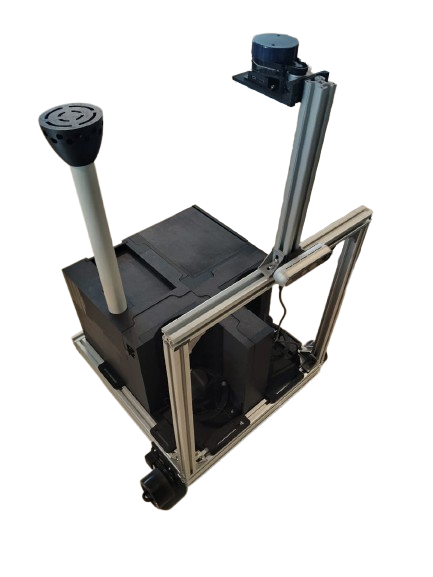

Agentic AIoT LLM Dashboard & Mobile App
2025AIoT platform that connects an AGV and factory sensors to a web dashboard and mobile app for multi-modal monitoring, analysis, and predictive maintenance. Current focus: acoustics-based defect detection on industrial components.
- Unified telemetry from the AGV (position, battery, motor current) and sensors (gas sensor and etc) into one stream.
- Acoustics pipeline: streaming record sound → feature extraction (Mel-Spectrogram) → anomaly scoring & defect classification.
- Live website shows device state, sensor charts, events, and logs; mobile client syncs via WebSocket.
- Agentic LLM workflows triage alerts and suggest checks/spare parts; device actions exposed via the MCP protocol.
AGVAcousticsPredictive Maintenance
IoTWebSocketLLMMCP